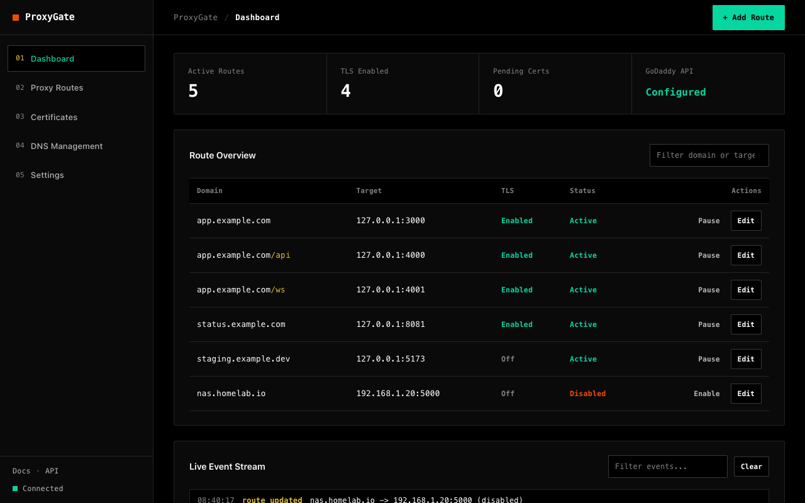
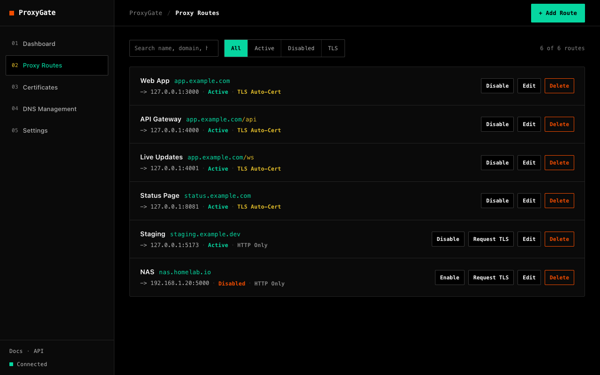

Routes, HTTPS and DNS in one small binary.
ProxyGate routes domains and paths to your services, issues and renews Let's Encrypt certificates, and manages your GoDaddy DNS records. It is one binary with a web UI, a REST API and a single JSON config file. No Docker, no database, nothing else to install.
Why ProxyGate
Three things it is built around.
Small footprint
A 3.5 MB download and a single binary with no dependencies. On a small ARM edge device with six routes it uses about 14 MB of RAM and little CPU, and starts serving in about 10 ms, certificates included.
Simple to run
One binary, one JSON config file, a web UI and a REST API. Routes, certificates and DNS settings apply the moment you save them, without a restart. It binds ports 80 and 443 without running as root.
Certificates handled for you
Let's Encrypt certificates through the DNS-01 challenge: ProxyGate publishes the TXT record with the GoDaddy API, so Let's Encrypt never has to connect to the machine. Certificates renew automatically and reload without dropping connections.
What's included
Everything the three points above rely on.
Domain and path routing
Send app.example.com to one service and app.example.com/api to another. The longest matching prefix wins, WebSocket and server-sent event connections pass through, and HTTP requests to a TLS route are redirected to HTTPS.
Automatic renewal
Once a day ProxyGate checks every certificate and renews any with 30 days or fewer left, publishing the challenge record through GoDaddy. New certificates are loaded without dropping connections.
GoDaddy DNS records
List your domains and view, create or delete their records from the same UI. Expired, cancelled and transferred domains are hidden unless you ask for them.
Locked-down admin
The admin UI needs a password, set on first start with a one-time code and recoverable from the machine. It listens on localhost by default and stores your GoDaddy credentials encrypted. More on security.
How it works
One process with two sides: the proxy engine serves your visitors on the HTTP and HTTPS ports, and the admin API edits the configuration. Routes, certificates and DNS settings apply the moment you save them. Listening ports, the admin address, the network allowlist and the advanced security settings are read at startup, so changes to those apply after a restart.
Admin UI
Served on the admin port (http://127.0.0.1:9090 by default) behind a password. Everything it does is also available through the REST API with an API token. Screenshots use example data.




Is it right for you?
ProxyGate does a few things well. Here is where it fits and where another tool will serve you better.
A good fit if
- Your domains are at GoDaddy. Certificate and DNS automation, including renewal, work with GoDaddy today.
- You run services locally and want them on your own domains with HTTPS, with little setup: add a route, click Request TLS, done. Certificates are verified through DNS, so this works even if the machine isn't reachable from the internet. How clients reach the machine is up to your network.
- You run on small or low-power hardware: about 14 MB of RAM and no runtime to install.
- You prefer a web UI to config files, and one binary to a container stack.
- You want to script it: everything in the UI is also a REST API, with API tokens for automation.
Look elsewhere if
- Your DNS is with a provider other than GoDaddy: other providers aren't supported yet. Until they are, certificates still work if you add the TXT record yourself, but renewal is manual.
- You want routes picked up automatically from Docker or Kubernetes labels, as Traefik does, or kept in a config file you edit and reload, as with Caddy. ProxyGate manages routes through its UI and REST API instead.
- You already use Docker and want many DNS providers in a UI: Nginx Proxy Manager supports more.
- You need load balancing, high availability or a Kubernetes ingress.
Quick start
Build with Go 1.24 or later. To start it at boot, see below. For ports 80 and 443 and other setups, see deployment.md.
# Build
git clone https://github.com/gcis/proxygate.git && cd proxygate
make build
# Run. The config file is created with defaults on first start.
./bin/proxygate --config ./data/proxygate.json
# Admin UI: http://127.0.0.1:9090 (docs at /docs/)
# Proxy: :8080 (HTTP) and :8443 (HTTPS) by default
# First visit: the admin UI asks for the one-time setup code, then a password.
cat ./data/setup-code
# Lost the password? Set a new one from the machine (signs everyone out):
./bin/proxygate passwd --config ./data/proxygate.json
# To reach the admin UI from another machine, set "admin_host": "0.0.0.0" in the config,
# then allow that machine's address or network (repeatable, saved to the config):
./bin/proxygate --config ./data/proxygate.json --allow-network 192.168.1.0/24Start it at boot
ProxyGate is a single program, so any service manager can run it. Point it at an absolute config path and set its working directory: certificates are saved in certs/ relative to where it starts. The setup code then appears in the data folder you chose.
# From the cloned repo: install the binary and a service user
sudo mkdir -p /opt/proxygate/data /opt/proxygate/certs
sudo cp bin/proxygate /opt/proxygate/
sudo useradd --system --no-create-home --shell /usr/sbin/nologin proxygate
sudo chown -R proxygate:proxygate /opt/proxygate
# The unit runs it as that user and lets it bind ports 80 and 443
sudo cp examples/systemd/proxygate.service /etc/systemd/system/
sudo systemctl enable --now proxygate
journalctl -u proxygate -f# Install the binary in its own folder
sudo mkdir -p /usr/local/proxygate/data
sudo cp bin/proxygate /usr/local/proxygate/
sudo chown -R "$USER" /usr/local/proxygate
# Start it at boot, as your user, and restart it if it stops
sudo tee /Library/LaunchDaemons/proxygate.plist >/dev/null <<EOF
<?xml version="1.0" encoding="UTF-8"?>
<!DOCTYPE plist PUBLIC "-//Apple//DTD PLIST 1.0//EN" "http://www.apple.com/DTDs/PropertyList-1.0.dtd">
<plist version="1.0">
<dict>
<key>Label</key><string>proxygate</string>
<key>ProgramArguments</key>
<array>
<string>/usr/local/proxygate/proxygate</string>
<string>--config</string>
<string>/usr/local/proxygate/data/proxygate.json</string>
</array>
<key>WorkingDirectory</key><string>/usr/local/proxygate</string>
<key>UserName</key><string>$USER</string>
<key>RunAtLoad</key><true/>
<key>KeepAlive</key><true/>
<key>StandardOutPath</key><string>/usr/local/proxygate/proxygate.log</string>
<key>StandardErrorPath</key><string>/usr/local/proxygate/proxygate.log</string>
</dict>
</plist>
EOF
sudo launchctl bootstrap system /Library/LaunchDaemons/proxygate.plist# In PowerShell as Administrator, next to the downloaded proxygate.exe
$dir = "C:\ProxyGate"
New-Item -ItemType Directory -Force "$dir\data" | Out-Null
Copy-Item .\proxygate.exe $dir
# Start it at boot and restart it if it stops
$action = New-ScheduledTaskAction -Execute "$dir\proxygate.exe" `
-Argument "--config $dir\data\proxygate.json" -WorkingDirectory $dir
$trigger = New-ScheduledTaskTrigger -AtStartup
$settings = New-ScheduledTaskSettingsSet -ExecutionTimeLimit 0 `
-RestartCount 3 -RestartInterval (New-TimeSpan -Minutes 1)
Register-ScheduledTask -TaskName ProxyGate -Action $action -Trigger $trigger `
-Settings $settings -User SYSTEM -RunLevel Highest
Start-ScheduledTask -TaskName ProxyGate